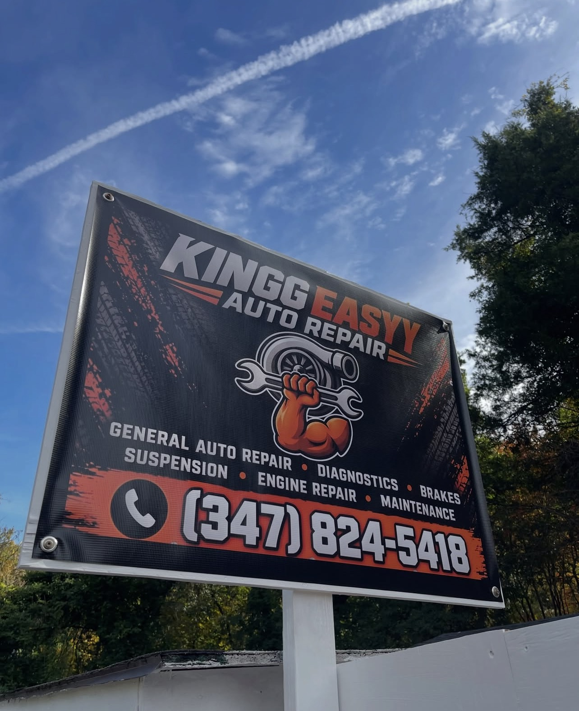

THE STORY BEHIND THE BUSINESS
Built on Hard Work. Driven by Dedication.
Get to know the person and purpose behind KinggEasyy Auto Repair.
MEET THE OWNER
The Man Behind the Wrench
Meet Ian
Behind KinggEasyy Auto Repair is Ian, a hands-on automotive repair business owner who takes pride in the work he does.
From diagnosing mechanical issues to handling more involved repairs, Ian approaches each job with a focus on dependable workmanship and practical solutions.
KinggEasyy Auto Repair is about more than fixing vehicles. It's about building a business rooted in dedication, honest communication, and respect for the people who trust him with their cars.

OUR BUSINESS
Local Roots. Real Work.
Proudly serving Winston-Salem and surrounding Triad communities, KinggEasyy Auto Repair provides automotive services ranging from routine maintenance to more complex repairs.
Our goal is simple: provide reliable service, communicate clearly, and give every repair the attention it deserves.
Call KinggEasyy Auto Repair